THINKINGENWEALTH · WOLF + D WAUGH
Built entirely from data pulled live this morning — zero unfilled numbers. On Thursday SPY closed at a record $777.88. On Friday, University of Michigan consumer sentiment printed 51, down about 8% in a month, and July retail sales came in at −0.6%. Both numbers are real. The episode opens that contradiction and refuses to resolve it until Segment 5.
S&P Dow Jones Indices announced Thursday Aug 13 that Reddit (RDDT) joins the S&P 500 before the open on Tuesday Aug 18, replacing AvalonBay Communities. This is the perfect TGW story because our audience is literally the product — and because it teaches the one thing nobody explains about index funds: they are rule-followers, not stock-pickers. When the committee changes the list, your fund has to buy, at whatever the market is charging.
| Time | Beat | The line | Cut | Loop |
|---|---|---|---|---|
| 0:00–0:02 | COLD OPEN | "This morning, your index fund bought Reddit. You didn't pick it. You couldn't have said no." | TUE_V1 (hook box) | OPENS |
| 0:02–0:10 | STAKES | "If any of your money is in an S&P 500 fund, this already happened before you woke up." | trading floor | attached |
| 0:10–0:26 | RISING 1 | Pt 1 · What your fund actually promised — the vending machine | TUE_T1 | who decides? |
| 0:26–0:44 | RISING 2 | Pt 2 · 16.7 million shares, no choice | TUE_T2 | at what price? |
| 0:44–0:52 | RE-HOOK | "And this is the part that decides whether that rule works for you or against you—" | close-up | RE-OPENS |
| 0:52–1:12 | PAYOFF | Pt 3 · The $333 million nobody voted on | TUE_T3 | CLOSES |
| 1:12–1:25 | LOOP-CLOSE | "You couldn't have said no. That's not the flaw — that's the whole product." | wide city | closed |
| Platform | The asset | Angle / age cut | Window | CTA |
|---|---|---|---|---|
| TikTok | ~75s greenscreen react, full script | 18–34 · "the first fund you ever bought" | 4–7pm ET | Comment RULES (line 1) |
| Same cut, IG-native captions, 9:16 | 18–34 · same cold open | 3pm ET | Comment RULES + Discord line | |
| YouTube | Short, re-recorded cold open | 35–54 · "the fund your retirement sits in" | AM–early-PM | Comment RULES + "full breakdown on the channel" |
| Discord | The Index Rulebook posted natively + the $333M math | All | With the TikTok drop | Discussion thread |
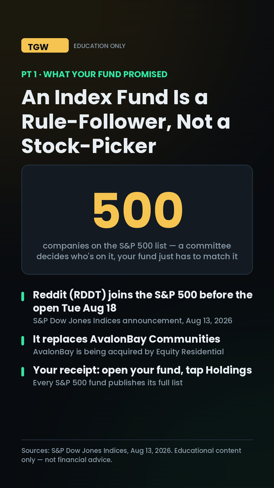
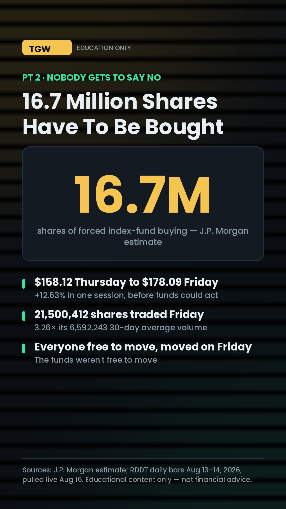
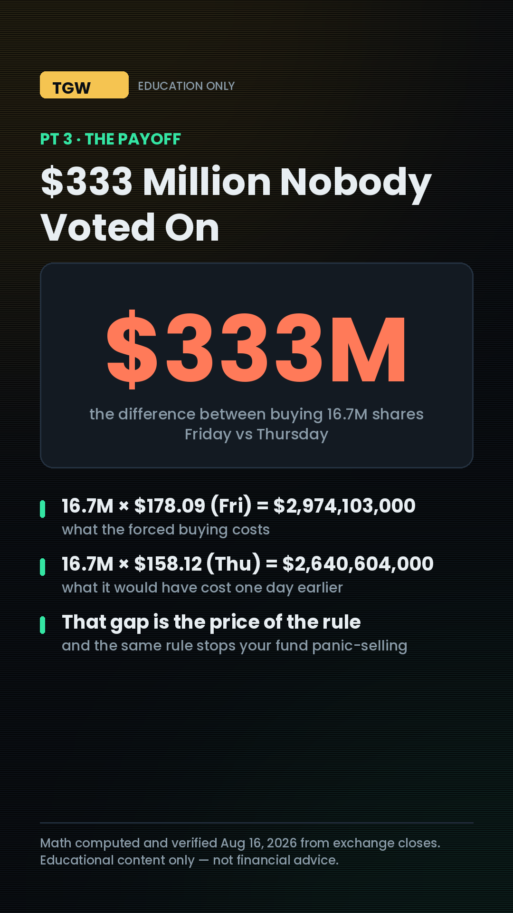
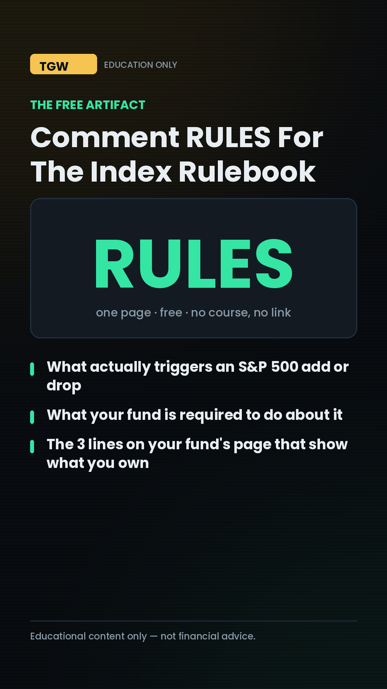
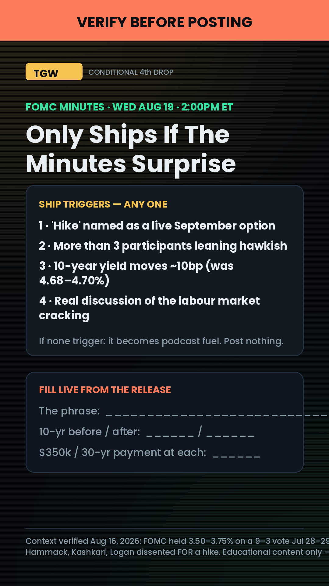
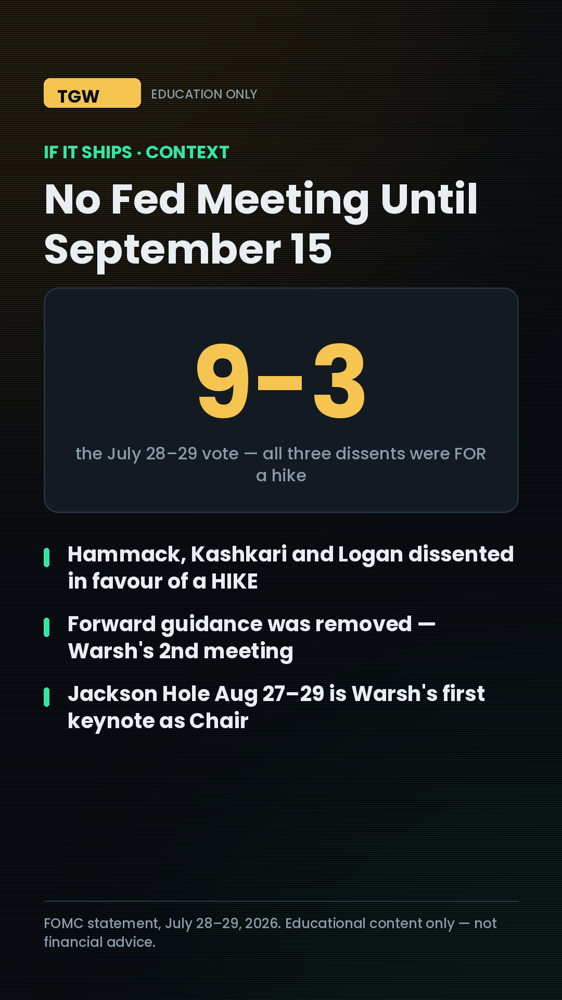
| Time | Beat | The line | Cut | Loop |
|---|---|---|---|---|
| 0:00–0:02 | COLD OPEN | "You've scrolled past this little line a hundred times. It's the most honest thing on your chart." | THU_V1 (hook box) | OPENS |
| 0:02–0:10 | STAKES | "It's the difference between buying a stock and buying the top of a stock." | phone chart | attached |
| 0:10–0:28 | RISING 1 | Pt 1 · The body is the score, the wick is the fight | THU_T1 | so what's LONG? |
| 0:28–0:48 | RISING 2 | Pt 2 · 2.68× — Reddit's Friday candle, four real prices | THU_T2 + live chart | always means that? |
| 0:48–0:56 | RE-HOOK | "And here's where most people read this exactly backwards—" | close-up | RE-OPENS |
| 0:56–1:18 | PAYOFF | Pt 3 · Volume is the tell — 3.26× normal | THU_T3 | CLOSES |
| 1:18–1:30 | LOOP-CLOSE | "Still the most honest thing on your chart — it just needs you to read what's underneath." | wide desk | closed |
| Platform | The asset | Angle / age cut | Window | CTA |
|---|---|---|---|---|
| TikTok | ~90s chart walkthrough, screen-record over greenscreen | Search-first · keyword-loaded caption | Midday (off-peak OK) | Comment WICK (line 1) |
| Same cut, IG-native | 18–34 · "buying the top" | 3pm ET | Comment WICK + Discord line | |
| YouTube | Short + a slower volume-bar walkthrough | 35–54 · "charts you've nodded at for 20 years" | AM–early-PM | Comment WICK + "full breakdown on the channel" |
| Discord | The Wick Checklist + the annotated candle image | All | With the TikTok drop | "Post a wick you found" |
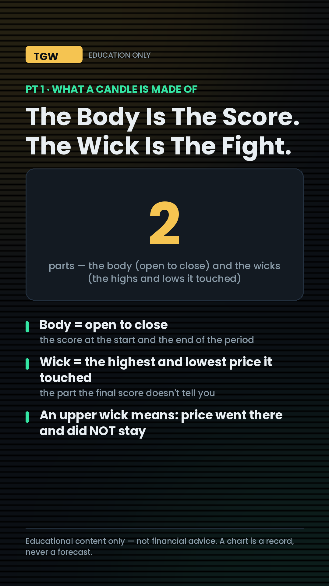
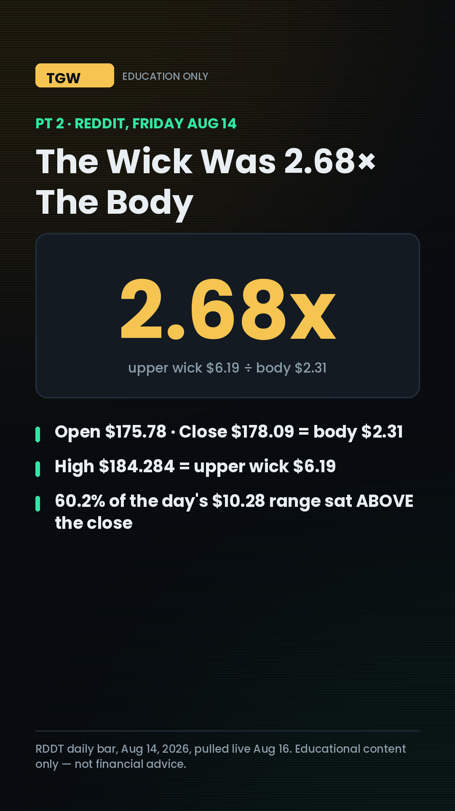
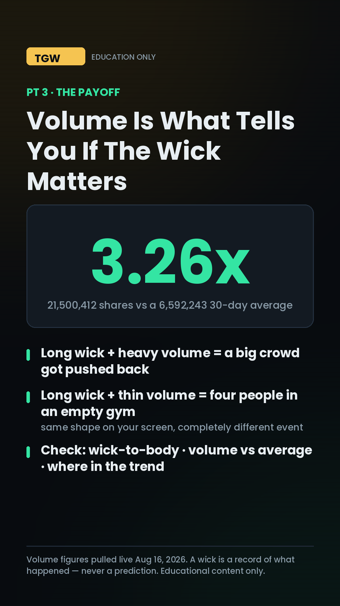
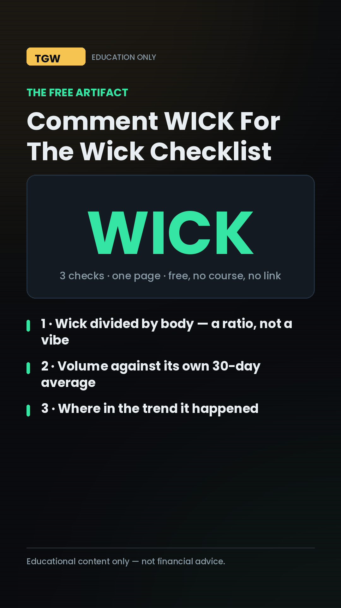
| Time | Beat | The line | Cut | Loop |
|---|---|---|---|---|
| 0:00–0:02 | COLD OPEN | "Somebody said what you've been thinking. He's not wrong about the feeling." | comment screenshot | OPENS |
| 0:02–0:12 | STAKES | "If that fear is why you haven't started, it's already cost you more than any red day." | kitchen table | attached |
| 0:12–0:30 | RISING 1 | Pt 1 · Nothing left your account — the quote changed | SAT_T1 | how bad does it get? |
| 0:30–0:50 | RISING 2 | Pt 2 · $25.81 — the worst day in three months | SAT_V1 + SAT_T2 | what if it doesn't come back? |
| 0:50–0:58 | RE-HOOK | "But the number isn't what makes it survivable. This is—" | close-up | RE-OPENS |
| 0:58–1:20 | PAYOFF | Pt 3 · The cash that isn't in the market | SAT_T3 | CLOSES |
| 1:20–1:32 | LOOP-CLOSE | "He wasn't wrong about the feeling — just missing what makes it survivable." | calm wide | closed |
| Platform | The asset | Angle / age cut | Window | CTA |
|---|---|---|---|---|
| Instagram 🔒 | IG-NATIVE cut — FIRST, comment on screen frame 1 | 18–34 · "why you haven't started" | 3pm ET — SATURDAY | Comment RED (line 1) |
| TikTok | Same react, after IG is live | 18–34 · same | 4–7pm ET Sat | Comment RED |
| YouTube | Short, re-cut stakes | 35–54 · "why your partner won't start" | Sat/Sun AM | Comment RED + hard DM CTA (weekend only) |
| Discord | The Red Day Sheet + an honest "what scared you out" thread | All | With the IG drop | Hard CTA — weekend |
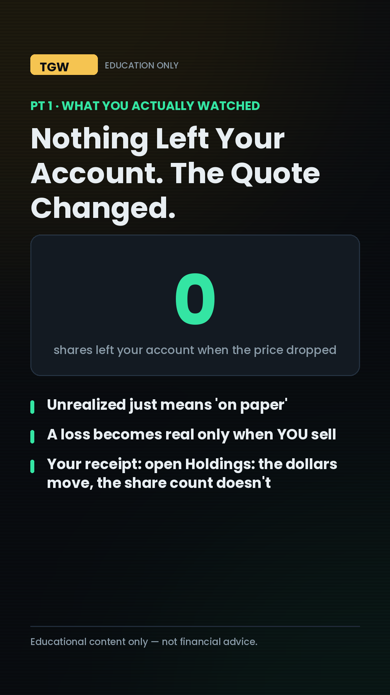
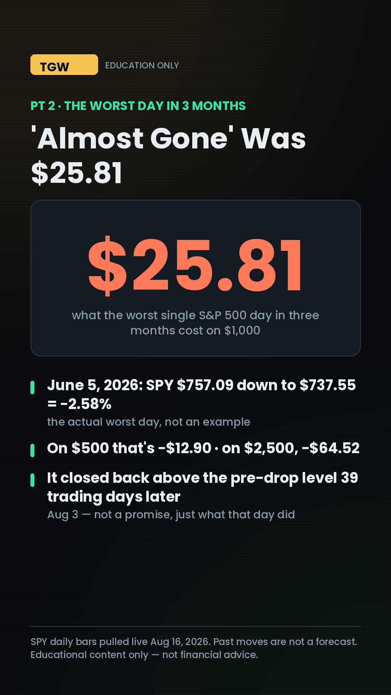
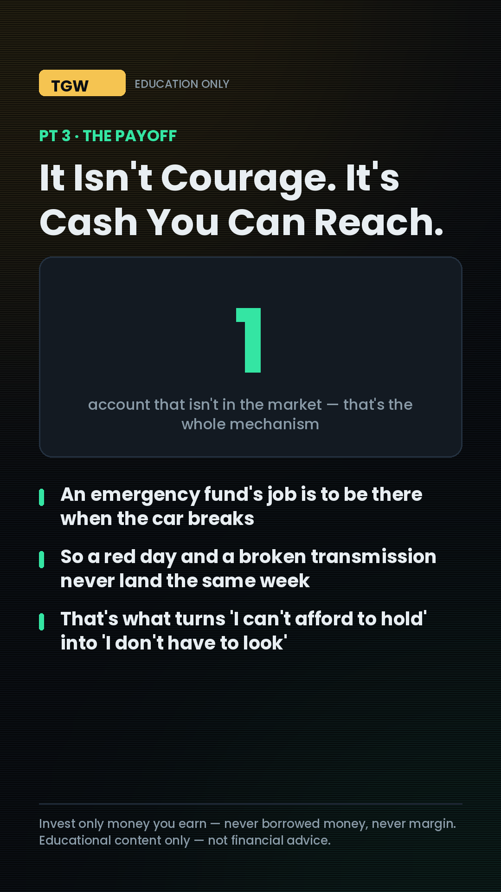
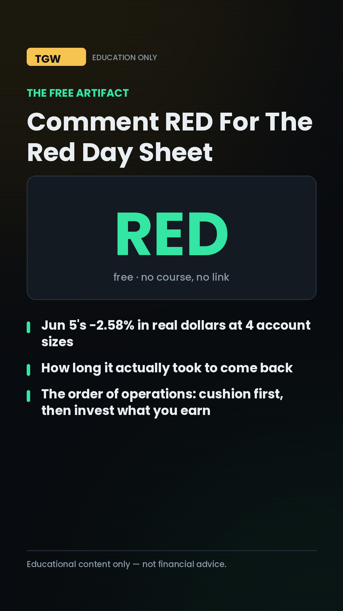
| Post | YouTube | TikTok | Artifact? | |
|---|---|---|---|---|
| "Half the country owns 1%" (Sun Aug 9) | 782 · 41.3% · 19 likes · 3 comments | 949 / 988 all-time | 1,572 · 81.7% non-followers · 43 likes · 9 saves · 11 shares · 2 follows | ✅ |
| Nvidia $500B loans react (Wed Aug 12) | — | 1.1K / 1.2K — week's #1 | 262 · 70.4% non-followers · 10 likes · 0 comments · 0 saves | ❌ none |
| "$15,550 taxed at $0" (Fri/Sat Aug 14–15) | 781 · 39.7% · 13 likes | — | 1,267 · 94.5% non-followers · 11 likes · 5 comments · 8 saves · 8 shares · 1 follow | ✅ |
| Time | Segment | The spine | 🖥️ Screen share |
|---|---|---|---|
| 0:00–1:30 | Cold open | Record close $777.88 vs sentiment 51 | — |
| 1:30–10:00 | The Consumer Cracked | Retail sales −0.6%; YoY 7.3 → 6.7 → 5.0; online −2.2%, autos −2.0%, restaurants +0.5% | consumer-vs-market · retail panel |
| 10:00–20:00 | 16.7M Shares Nobody Voted On | The full $2.97B / $2.64B / $333M build | reddit-index · full |
| 20:00–29:00 | Wednesday's Minutes & Your Mortgage | 9–3 vote, three hike dissents; 10-yr 4.68–4.70%; Freddie 6.67% | consumer-vs-market · rates panel |
| 29:00–37:00 | What a Bad Day Actually Costs | The EYL comment; unrealized vs realized; −2.58% = $25.81; 39 trading days | wick-anatomy · red-day panel |
| 37:00–42:00 | So Which Number Do You Plan Around? | The payoff — closes the through-line. Neither. Your cash months and your timeline. HD/TGT/LOW/WMT are the built-in verdict | consumer-vs-market · earnings docket |
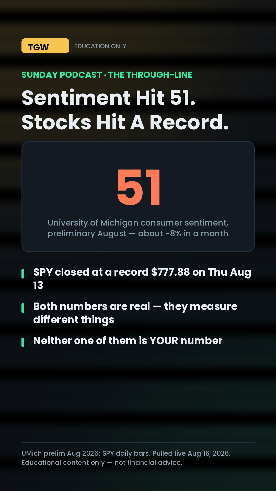
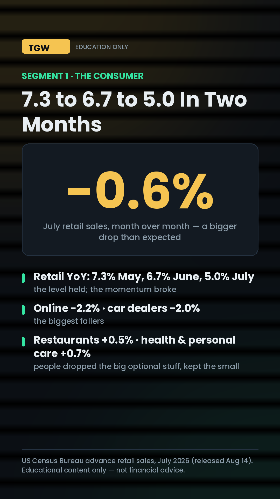
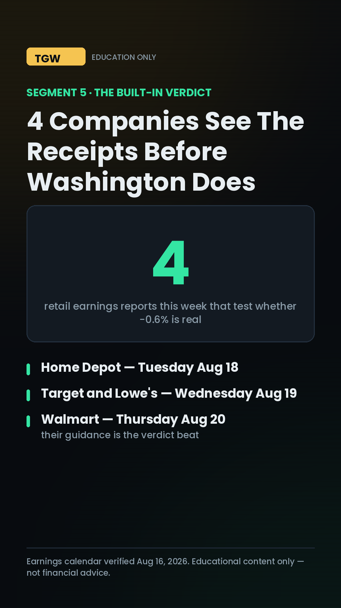
| Segment | Known going in | FILL LIVE |
|---|---|---|
| 1 · The Retail Verdict | HD Tue ($338.79 Fri close) · TGT + LOW Wed (TGT $154.52) · WMT Thu ($115.27), against retail sales −0.6% / +5.0% YoY | Comps · guidance · the exact words on the consumer · day reaction |
| 2 · What the Fed's Notes Said | Minutes Wed 2pm from the 9–3 hold; 10-yr 4.68–4.70%; Freddie 6.67% | Did "hike" appear · 10-yr before/after · Thu PMMS print · $350k mortgage math |
| 3 · The Index Add, One Week Later | RDDT joined pre-open Tue; $158.12 → $178.09 (+12.63%); ~16.7M shares forced | What it did Mon/Tue · inclusion-day volume · how many used the RULES trigger |
| 4 · Jackson Hole Eve | Aug 27–29, Warsh's first keynote, into CPI 3.4% / payrolls −23,000 / sentiment 51 | The agenda · pre-positioning · if/then on the 30-yr — never a forecast |
| 5 · The payoff | Did the receipts match the government's number? | Land it on: the weather changes, the roof is your cash cushion + timeline |
Lane 1 — the BUSINESS lane: fix the credit → cheaper borrowing + business funding when you need it. Lane 2 — the INVESTING lane: invest what you EARN through the brokerage — earned income only, never borrowed money, never margin. Connect the journey, keep the lanes explicit. Any copy that could read as "borrow → invest" fails review.